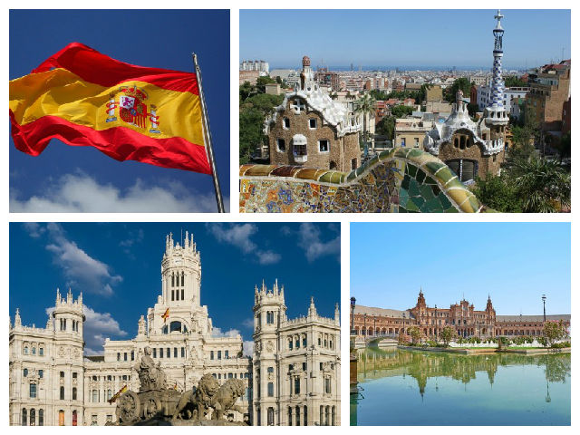
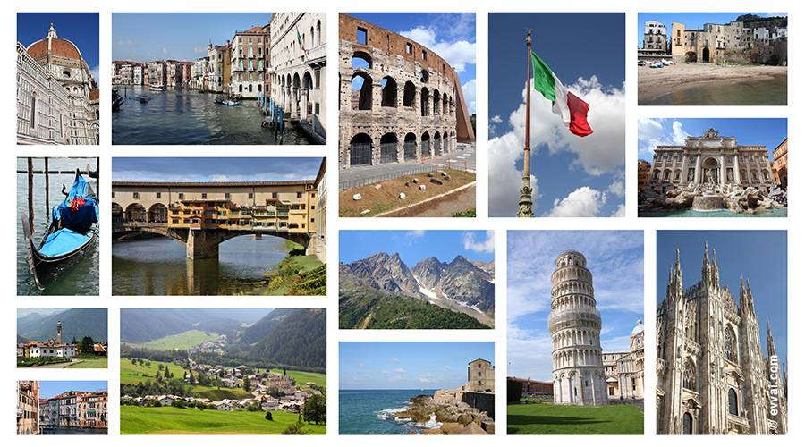
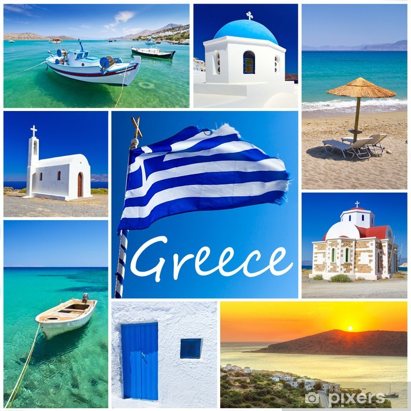
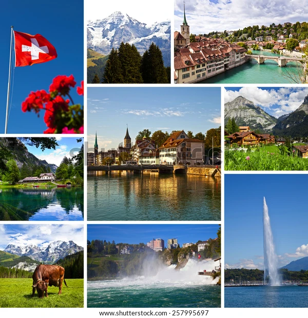

España
✈️ Inspiración de destino
“Barcelona: donde el arte y la arquitectura se dan la mano” Déjate enamorar por las curvas modernistas de Gaudí, las plazas llenas de vida y ese ambiente mediterráneo que invita a perderse por sus calles. 🍜 Comida típica
“No solo tapas: descubre la calçotada catalana” ¿Sabías que hay una fiesta dedicada a los calçots (una especie de cebolla tierna)? Es una tradición deliciosa, divertida y muy local. 📸 Lugares instagrameables
“Top 5 spots en Madrid para tus mejores fotos” Desde el Palacio de Cristal hasta el Templo de Debod al atardecer.
“Barcelona: donde el arte y la arquitectura se dan la mano” Déjate enamorar por las curvas modernistas de Gaudí, las plazas llenas de vida y ese ambiente mediterráneo que invita a perderse por sus calles. 🍜 Comida típica
“No solo tapas: descubre la calçotada catalana” ¿Sabías que hay una fiesta dedicada a los calçots (una especie de cebolla tierna)? Es una tradición deliciosa, divertida y muy local. 📸 Lugares instagrameables
“Top 5 spots en Madrid para tus mejores fotos” Desde el Palacio de Cristal hasta el Templo de Debod al atardecer.

Italia
🖼️ Experiencias de viajeros
“Me perdí en Venecia (y fue lo mejor que me pasó)” Calles estrechas, puentes ocultos, música flotando desde una góndola. A veces, no seguir el mapa es el mejor plan. 🎉 Eventos y festividades
“Carnaval de Venecia: entre máscaras y magia” Una experiencia única para sentirte en otra época, donde cada calle se vuelve un escenario. 🛍️ Souvenirs recomendados
“Qué traer de Italia (más allá de pasta y vino)” Pequeñas botellas de limoncello, máscaras venecianas o papel artesanal de Florencia.
“Me perdí en Venecia (y fue lo mejor que me pasó)” Calles estrechas, puentes ocultos, música flotando desde una góndola. A veces, no seguir el mapa es el mejor plan. 🎉 Eventos y festividades
“Carnaval de Venecia: entre máscaras y magia” Una experiencia única para sentirte en otra época, donde cada calle se vuelve un escenario. 🛍️ Souvenirs recomendados
“Qué traer de Italia (más allá de pasta y vino)” Pequeñas botellas de limoncello, máscaras venecianas o papel artesanal de Florencia.

Grecia
✈️ Inspiración de destino
“Islas griegas: ¿Santorini o Mykonos?” ¿Buscas romanticismo o fiesta? Comparativa rápida para elegir tu isla ideal. 🧘 Viajes wellness o espirituales
“Amanecer en Meteora: monasterios en las nubes” Un lugar donde la espiritualidad y la naturaleza se funden en el silencio del amanecer. 🎒 Tips personales
“Qué empacar para Grecia en verano (y qué dejar en casa)” Lleva sandalias cómodas, traje de baño y una botella reutilizable. Deja los tacones, no los usarás.
“Islas griegas: ¿Santorini o Mykonos?” ¿Buscas romanticismo o fiesta? Comparativa rápida para elegir tu isla ideal. 🧘 Viajes wellness o espirituales
“Amanecer en Meteora: monasterios en las nubes” Un lugar donde la espiritualidad y la naturaleza se funden en el silencio del amanecer. 🎒 Tips personales
“Qué empacar para Grecia en verano (y qué dejar en casa)” Lleva sandalias cómodas, traje de baño y una botella reutilizable. Deja los tacones, no los usarás.

Suiza
🍜 Comida típica
“Fondue, raclette y chocolate: ruta suiza para foodies” Cada ciudad tiene su especialidad. ¿Sabías que en Zúrich se come un delicioso "Zürcher Geschnetzeltes"? 📸 Lugares instagrameables
“Postales vivas: 4 lagos suizos que parecen irreales” Te sorprenderá el Lago de Lucerna y el reflejo del Matterhorn en el lago Riffelsee. 🖼️ Experiencias de viajeros
“Dormí en un iglú a -5°C y así fue mi noche” Una aventura congelada con vistas estrelladas, vino caliente y mucha risa.
“Fondue, raclette y chocolate: ruta suiza para foodies” Cada ciudad tiene su especialidad. ¿Sabías que en Zúrich se come un delicioso "Zürcher Geschnetzeltes"? 📸 Lugares instagrameables
“Postales vivas: 4 lagos suizos que parecen irreales” Te sorprenderá el Lago de Lucerna y el reflejo del Matterhorn en el lago Riffelsee. 🖼️ Experiencias de viajeros
“Dormí en un iglú a -5°C y así fue mi noche” Una aventura congelada con vistas estrelladas, vino caliente y mucha risa.